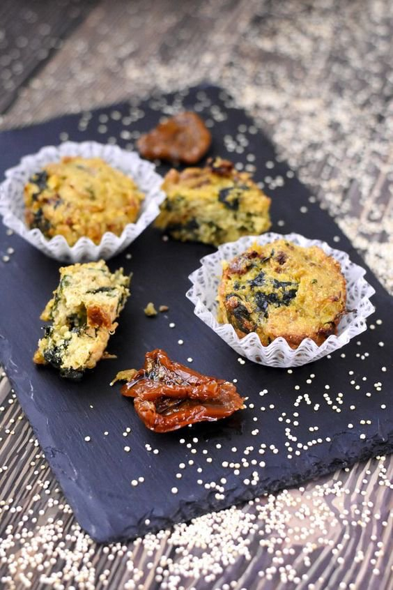

Cake salé ou muffins salés
Ingredients
×
- 3 œufs
- 180 g de farine
- 1 sachet de levure
- 3 c. à s. d'huile
- 12 cl de lait
- 50 g de gruyère râpé
- 200 g de feta
- menthe

Une base, plusieurs garnitures.
Préparation
Étape 1
Préchauffer le four à 180ºC.
Étape 2
Battre 3 œufs dans un saladier. Ajouter petit à petit 180 g de farine et 1 sachet de levure, puis 3 c. à s. d'huile et 12 cl de lait.
Étape 3
Incorporer 50 g de gruyère râpé et la garniture : 200 g de feta en dés et de la menthe.
Étape 4
Cuire 45min (25min pour des muffins).
Conseils
- Tomates séchées : 200g de tomates séchées, 1 feta, olives noires, basilic.
- Jambon : dés de jambon, olives, 70g de comté râpé.
- Courgette : 1 courgette râpée, 75g de gruyère, 6 tomates séchées, échalote, basilic, graines (pignons, courge) ; 2 œufs, sans huile, 15cl de lait.
- Lardons : 140g de lardons revenus avec 1 oignon et du thym ; 5 œufs, 11cl de crème fraîche au lieu du lait, 110g de beurre fondu.
- Trois fromages : 110g de tomme, 110g de comté, 70g de reblochon en dés ; 5 œufs, 90g de crème chauffée avec les œufs au lieu du lait, 70g de beurre fondu.